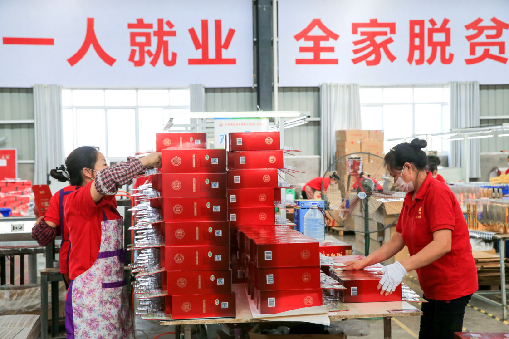

统筹做好疫情防控和经济社会发展，既是一次大战，也是一次大考。四川在常态化疫情防控中抓好“六稳”工作、落实“六保”任务，加快恢复经济社会秩序。健全常态化防控机制，不断巩固拓展疫情防控成效。坚持农业多贡献、工业挑大梁、投资唱主角、消费促升级，切实畅通产业循环、市场循环、经济社会循环，推动正常生产生活秩序全面恢复。
第一组
抓紧生产，平稳复苏。四川根据中央部署“分区分类、灵活安排”的策略，稳步有序推进复工复产。春耕启动、工业恢复生产、重大项目相继复工……从田间地头到工厂车间，复工复产提速扩面，社会经济正逐步恢复往日活力。
作为农业大省，四川各地全力保障疫情防控和春耕生产“两不误”，确保农业生产良好开局。
成都天府国际机场加速复工
中欧班列持续常态化运行
2020年第一季度重大项目集中开工
彝族群众入住新家
首批住户搬进安置点

贫困群众在“就业扶贫车间”工作
泸州老窖春酿封存
工人在整车装配线上忙碌